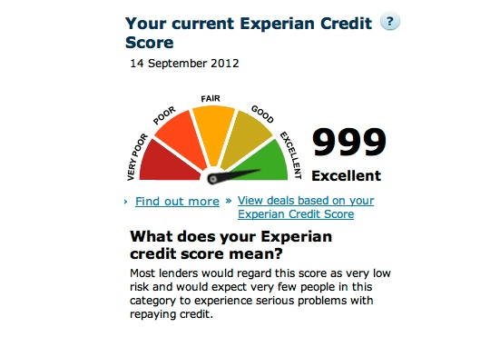
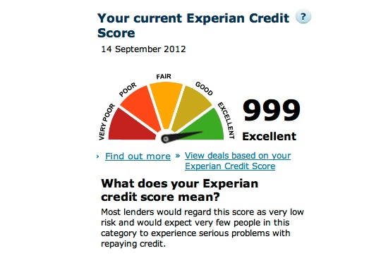

403 Max restarts limit reached

Error 403 Max restarts limit reached
Max restarts limit reached
Guru Mediation:
Details: cache-fra19158-FRA 1606901091 1013910053
Varnish cache server

Posted by Someone 2020.12.02 10:24 • Comments (64) • Full article

Max restarts limit reached
Details: cache-fra19158-FRA 1606901091 1013910053
Varnish cache server
About
© Untitled. All rights reserved. Design by TEMPLATED.